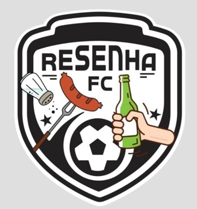
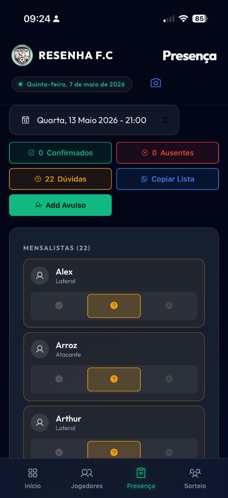
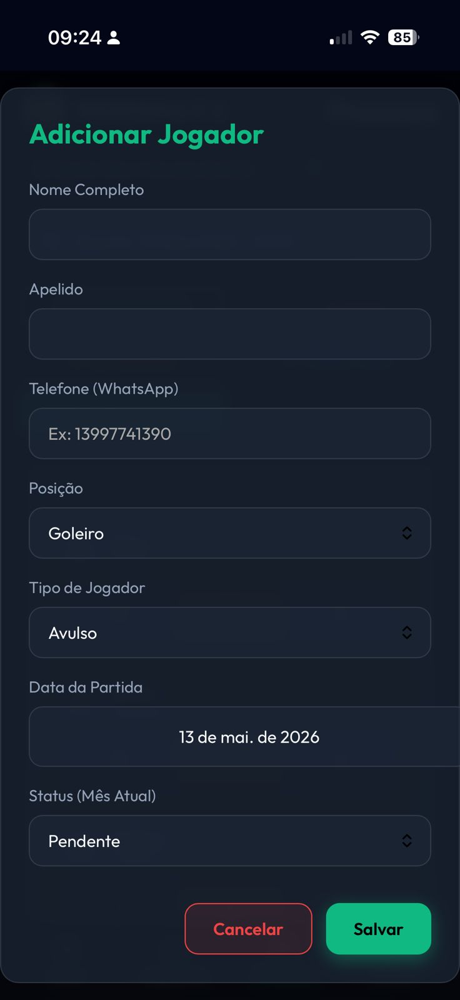
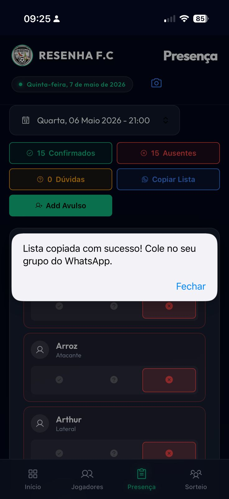
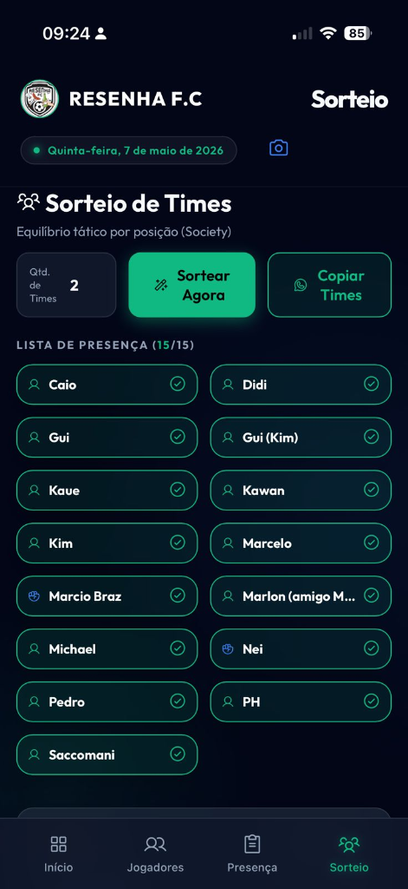
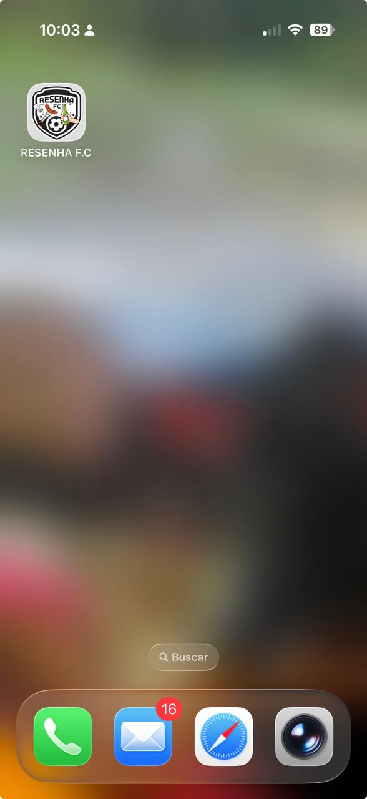

Resenha F.C.
Clique no seu nome e escolha um dos três status abaixo:

Foto 1: Tela de Presença e botões de status.
Para trazer convidados, use o botão verde de "Add Avulso".

Foto 2: Clique no botão verde para cadastrar o convidado.
Use os botões de atalho para enviar as informações no grupo:

Foto 3: Botões de Copiar Lista e Lista de Dúvidas.
A hora mais esperada! Sorteio equilibrado por posição:

Foto 4: Tela de Sorteio com Check-in de chegada.
Abra o Resenha como um aplicativo real para acesso rápido:

Foto 5: O Resenha instalado na sua tela de início.
O ícone oficial aparecerá junto com seus outros apps!